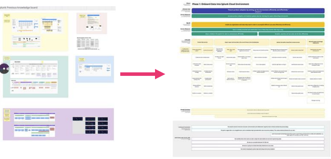

Lingyi Ge · Sole domain researcher · JTBD · journey maps · gap analysis
Six-month roadmap · 12 min read
Public portfolio. Customer and participant details anonymized; artifact visuals redacted or recreated.
From siloed assumptions to a unified research library.
Data onboarding had been a top pain point for years. The problem wasn’t missing research, it was five teams telling five different stories about the same customer job.

Core platform job map for guided data ingestion: one entry point in a broader Data Management research library.
01 · Where the problem started
What “Data Management” means at Splunk
At Splunk, Data Management (DM) is the end-to-end experience of getting organizational data into, through, and governed within the platform so teams can search, monitor, and act on it. It is not one feature; it is a domain that spans multiple product areas.
DM areaWhat users are trying to do
Data ingestion & onboardingConnect sources, configure pipelines, and get data to the right destinations (guided ingestion, connectors, forwarders).
Data processing & routingParse, transform, route, and enrich data as it moves through the platform.
Agent & connector managementDeploy, monitor, and maintain collection agents across hybrid and cloud environments.
Data governance & cost controlFilter noise, manage retention, control ingest volume, and stay within license boundaries.
Cross-platform data experienceAlign how data flows and is managed across Splunk Core and observability (O11y / AppDynamics) surfaces, especially after product-line integration.
Guided Data Ingestion (GDI), onboarding the right data for the right use cases, had been a top pain point in this domain for years. But the problem was bigger than one workflow.
Why I believed the domain could be unified
Before leading research for Splunk Data Management, I worked on data management in another product org at the same company. The surface areas differed, but the customer jobs felt remarkably similar: unclear ownership across teams, manual handoffs, cost anxiety before data lands, and friction between business intent and technical execution.
That cross-org lens shaped my mandate: Data Management is one experience to customers, even when it is built by many internal teams. Aligning internal knowledge wasn’t bureaucracy; it was how we stop shipping fragmented UX that forces admins to learn five versions of the same job.
The situation when I took on DM research
Stakeholders were running parallel JTBD work in isolation, with no shared source of truth.
Personas, journey maps, user stories, and service maps coexisted without alignment.
Splunk Core and O11y research had diverged after integration: same customers, different internal narratives.
Sales, Marketing, and leadership were messaging and investing from artifacts that didn’t match what product was building.
Teams knew what they were building but not which customer jobs were underserved across the full DM domain.
“We don’t need another wizard, we need to know our stakeholders won’t get a surprise bill.”
Composite paraphrase · data platform admin (public-safe)
What was at stake: Duplicate research, conflicting prioritization, and features shipped against internal debate, not customer jobs. Without a unified DM foundation, product would ship one experience while Sales pitched another, Marketing messaged features instead of jobs, and Executives funded fragmented bets, and customers would still feel the domain as one broken handoff chain.
Pre-foundation state: DM was one domain for customers, many disconnected research stories internally.
02 · The mandate
I was the only researcher covering the Data Management domain. The ask wasn’t another deck; it was infrastructure to unify how the whole org understands DM, from PM, Design, and Eng to Sales, Marketing, and Executives.
Build foundational knowledge across DM, not only onboarding, but the jobs that connect ingestion, governance, and cross-platform use.
Align internal knowledge across orgs and product areas so every function argues from the same customer job, not competing frameworks.
Produce artifacts each stakeholder can actually use, not a research archive locked in a wiki.
Why sole ownership mattered: Without a domain owner, Splunk Core and O11y groups would keep interviewing the same admins and architects, and Sales, Marketing, and leadership would keep hearing different versions of the customer story. Someone had to hold the full DM job and translate it for six very different audiences.
03 · One library, six stakeholder languages
The research library was designed as a system, not a single deliverable. Product teams weren’t the only audience: Sales, Marketing, and Executives also needed a shared customer truth, but each in a different form. Every artifact traces back to the same JTBD foundation.
Artifact · audienceWhat it gives them
JTBD job maps PM · ExecutivesShared job language for roadmap prioritization, opportunity sizing, and job stories in PRDs; exec-ready framing of which customer jobs the portfolio serves.
Personas & archetypes Sales · Marketing · DesignCustomer roles, motivations, and pain language for discovery calls, campaigns, and experience design, not demographic fiction.
User journey maps Design · MarketingEnd-to-end flows and handoff pain points for prototyping; narrative arcs and content themes grounded in real friction, not feature lists.
Gap analysis & opportunity scoring PM · Design · Eng · ExecutivesWhat exists, what’s missing, and where users are unsatisfied, per little job; satisfaction scores and investment tradeoffs for leadership reviews.
Executive readouts & monthly share-outs Executives · PM · leadsCondensed strategic narrative: domain pain, cross-product alignment, and where research says to invest, not raw interview data.
Iterative revisions All sixLiving library that incorporates PM feasibility, design feedback, eng constraints, sales field input, marketing messaging checks, and exec strategic direction, not a one-time research drop.
The principle: one customer job map roots every conversation, but each stakeholder needs a different entry point.
StakeholderThey need to answer…
PMWhich jobs do we prioritize on the roadmap?
DesignWhere does the experience break across DM surfaces?
EngWhich gaps are technical capability vs. UX?
SalesHow do I talk to customers about their onboarding pain in their language?
MarketingWhat outcomes and emotions do we message, not just what features we ship?
ExecutivesAre we investing in the right jobs across a fragmented domain, and is the org aligned?
Research library architecture: one JTBD core, six stakeholder-ready outputs.
04 · Why JTBD, and why a program, not a study
Jobs-to-be-Done shifts conversation from features to outcomes. For a multi-year DM pain point spanning product areas, I needed artifacts teams would reference in roadmap debates, not reports that died in wikis.
What JTBD gave us
A shared structure for customer needs across Splunk Core, O11y, and cross-org DM teams.
A way to measure the delta between current capabilities and user needs.
A prioritization lens for innovation: new jobs, not feature increments.
A common vocabulary when internal org boundaries don’t match customer mental models.
Structure used consistently across product lines so teams could compare apples-to-apples.
05 · How I built it (program design)
Six-month roadmap in three phases.
Phase 01 · Foundation
JTBD interviews with admins, engineers, architects, and security stakeholders.
Program roadmap socialized at monthly share-outs; revisions incorporated cross-functional feedback each cycle.
Methods: JTBD-informed interviews · multi-level job mapping · cross-product comparison · journey mapping · designer-led gap workshops · collaboration intake for technical constraints and edge cases
06 · One moment on the map (walk-through)
Ultimate job
Ensure the right organizational data is available in the Splunk platform for search, analytics, and operational use cases, reliably and cost-effectively.
Big job
Onboard and maintain data sources across a complex enterprise environment.
Little job (example)
Separate signal from noise before ingestion, so teams aren’t paying to index low-value telemetry.
Emotional job
Feel confident explaining ingestion choices to finance and security stakeholders, not blindsided by cost or compliance surprises.
Where product failed this little job: Users described manual pre-processing in external tools because in-product filtering and cost preview came too late, after political battles over volume had already started.
This little job scored consistently low in gap analysis, a prioritization input PM used alongside design and eng feasibility.
Example of how little jobs became backlog arguments, with emotional and constraint context attached.
07 · The turning point: same DM job, different product paths
Cross-product synthesis confirmed what I had seen across orgs: the high-level DM job is shared; the little jobs diverge by product line.
Similarities (shared pain across Splunk Core & O11y)
Same persona mindsets doing core functional jobs.
Unclear ownership, manual processes, and dependency on third-party tools.
Same desired outcome: data reliably in the system, enabling daily work.
Similar emotional jobs: competence, credibility, not being blamed for outages.
DimensionSplunk CoreO11y (AppDynamics)
Data typesLogs, metrics (limited)Metrics, distributed traces
Connection methodsUniversal / heavy forwarderOpenTelemetry
Implication delivered to product: Customers experience one Data Management domain, but onboarding UX cannot assume one technical path. Job maps share an ultimate-job narrative and fork on little jobs; journey maps show where those forks matter in the end-to-end experience.
Comparison artifact used to resolve “same job or different job?” debates in joint planning.
Journey map connects JTBD little jobs to experience flows Design could prototype against.
08 · Aligning internal knowledge across orgs
The user problem wasn’t only “onboarding is hard.” Internal teams were optimizing from different stories about the same DM domain.
Before
–Parallel JTBD efforts in separate orgs.
–Duplicated customer interviews.
–PM, Design, Eng, Sales, Marketing, and Executives each working from different customer stories.
–Field teams messaging features; leadership hearing conflicting prioritization narratives.
–Cross-platform DM felt like two products to customers but ten products internally.
After
+One domain research library as the reference layer for the whole org.
+Shared ultimate job across Splunk Core and O11y: same language in roadmap reviews and exec readouts.
+Personas and journey pain points Sales and Marketing could cite without inventing customer fiction.
+Product-specific little jobs and journeys where technical reality diverges.
+Gap analysis as the shared path from research to roadmap, and to investment conversations with leadership.
+Revisions each month as all six stakeholder groups surfaced constraints, field feedback, and strategic direction.
Organizational shift: unified DM experience for customers, built from aligned internal knowledge across product and go-to-market functions.
09 · Job maps don’t create action, gap analysis does
Early risk: teams would admire the job map and still argue from gut feel.
Mitigation: gap workshops mapping, per little job:
What exists today (Eng validates).
What’s being built (PM owns).
Where users are unsatisfied (Research + Design score).
What should be designed next (Design translates to concepts).
Customer-facing impact (Sales + Marketing pressure-test whether gaps match field reality).
Investment priority (Executives use satisfaction scores in portfolio tradeoff discussions).
That template became the bridge from research library to roadmap, and to go-to-market and leadership alignment, not a one-off workshop.
Gap analysis framework
Little job
Current capability
What’s missing
Satisfaction
Owner
Separate signal from noise before ingestion
Post-ingest filtering only
In-product pre-ingest filter and cost preview
Low
PM + Design
Explain cost before data lands
Bill visible after ingest
Volume and cost preview at config time
Low
PM + Eng
Onboard a known source quickly
Guided connector flow
Fewer manual configuration steps
Medium
Design
LowMediumHighOwners map to the six functions: PM · Design · Eng · Sales · Marketing · Executives
Gap framework used in design workshops and exec readouts; satisfaction scores made tradeoffs visible to leadership.
10 · What we derived: recommendations → decisions
Decision A · Unified narrative, forked execution
Before Pressure to ship one unified onboarding experience across Splunk Core and O11y post-integration.
After Shared ultimate-job narrative plus product-specific little-job flows and journeys, avoiding a compromised one-size UX that served neither OTel-first nor forwarder-first paths.
Draft note: Confirm with PM before publishing on personal site.
Decision B · Prioritization from gap scores, not feature requests
Before Connector expansion and UI polish competed for the same planning cycles.
After Gap analysis surfaced pre-ingestion filtering and cost preview as consistently underserved little jobs, reprioritized ahead of net-new connector coverage for one planning cycle.
Draft note: Replace with your highest-confidence gap example if different.
Decision C · Research library as cross-org infrastructure
JTBD maps, journey maps, personas, and gap artifacts became the starting point for debates across PM, Design, Eng, Sales, Marketing, and Executives, not a research-team archive. Monthly share-outs gave leadership a strategic view of the domain; personas gave Sales and Marketing customer-grounded language. Revision cycles kept the library aligned as the DM domain evolved.
11 · What changed (impact)
Built Splunk Data Management’s foundational research library from scratch over a six-month roadmap.
Unified internal knowledge across orgs, product areas, and go-to-market functions around one DM job narrative.
Became a primary reference for PM prioritization, Design experience planning, Eng feasibility, Sales customer conversations, Marketing messaging, and Executive investment reviews.
Established gap analysis as the standard path from job maps to backlog, and to leadership tradeoff conversations.
Enabled downstream strategic work: AI-Guided Onboarding. JTBD named the job; trust research scoped how AI could serve DM without breaking handoffs.
Library as system: six stakeholder entry points, one customer job foundation.
12 · Reflection
What I’d do again: design the library for stakeholder use on day one, not “publish job map, hope PM finds it.” Product, go-to-market, and leadership each need a different entry point from the same evidence.
Why this layer matters for AI: you can’t judge whether AI solves a real problem until you’ve named the job, the little jobs within it, and where product already falls short. AI sits on top of that map; it doesn’t replace understanding pain. This JTBD foundation is what kept later AI work honest: not “splash AI on onboarding,” but “which handoff can AI actually shorten?”
Cross-org insight I’d carry forward: customers don’t experience org charts. If DM feels similar across product areas, research should connect those areas, and give Sales and Marketing the same job language product uses, so customers hear one story.
Sole-researcher tradeoff: I could hold the full domain narrative, but monthly share-outs to executives and revision cycles with field and marketing partners distributed ownership so the library stayed current and credible outside the product org.
What this case proves: I build research infrastructure that aligns how an entire org, not just product, understands a complex domain, and gives PM, Design, Eng, Sales, Marketing, and Executives a shared language to ship and sell a unified experience, before anyone adds an AI layer on top.